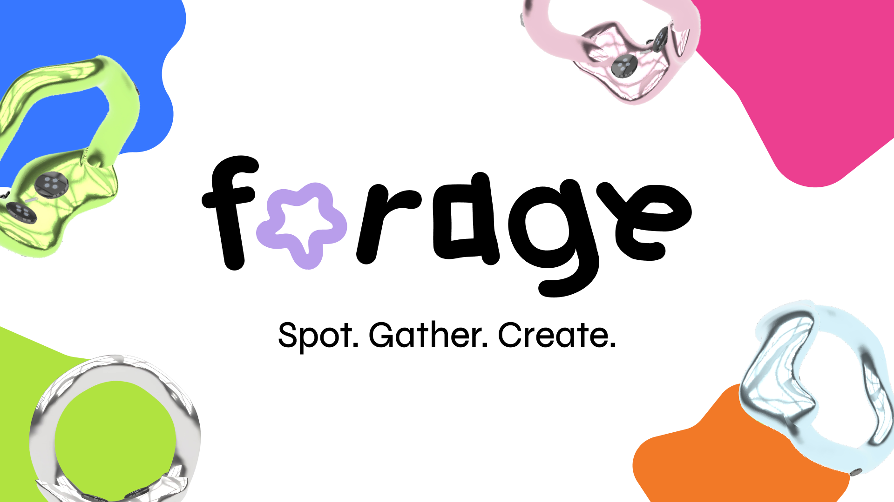

Forage · 2026 · Speculative Product System
A wearable + AI system that turns fleeting inspiration into reusable design assets.

Forage reframes inspiration capture from a fragmented note-taking behavior into a full capture-to-retrieval system. Instead of asking designers to remember what they noticed and manually reconstruct it later, the product lets them collect moments in context, translate them into structured asset types, and retrieve them inside a browsable design library.
Role
Product designer defining the concept, end-to-end product direction, interaction model, system architecture, hardware touchpoint, and case study narrative.
Scope
0→1 product definition across wearable capture, AI translation, and a web app for organizing and retrieving inspiration.
Core users
Designers who regularly notice usable inspiration in the physical world but lose it before it becomes reusable creative material.
What changed
The project moved away from a vague “capture anything” premise into a narrower system focused on four design-relevant outputs: images, color, typography, and motion.
Overview
What big-tech reviewers should immediately understand
The strongest signal in Forage is not the wearable form factor. It is the product definition: you identified that the design problem is not just capture, but the system failure between noticing inspiration, preserving it in context, translating it into a usable format, and finding it later when it matters.
That framing positions the work as a systems problem rather than a novelty device. The case study should therefore lead with the system, not the ring. A hiring manager should scan this page and understand that you defined:
The user problem
Design inspiration happens away from the desk, but today’s tools capture fragments, not usable design material.
The product strategy
Narrow the system to four asset types designers can actually reuse: image, color, typography, and motion.
The system bet
Use AI as a translation layer that converts real-world input into structured, browsable design assets.
Reviewer read
This project reads strongest when it is framed as design infrastructure for inspiration capture, not as a speculative gadget. The ring is simply the low-friction input surface for a larger cross-touchpoint system.
Core Flows
The strongest story is not capture alone. It is capture → interpretation → retrieval → reuse.
1. Capture in context
The user notices a design-relevant moment in the real world and saves it with a minimal ring interaction. The value proposition is speed and low disruption.
- Supports spontaneous capture outside a desk-based workflow.
- Makes the product feel ambient rather than app-dependent.
- Positions the device as input hardware for a larger system.
2. AI translates the moment into a usable design object
The system classifies the capture and generates metadata or extracted output depending on the asset type. This is where Forage becomes more than a storage product.
- Image captures become categorized references.
- Color captures become reusable palettes.
- Typography captures are grouped by type characteristics.
- Motion captures become animation references instead of generic video clips.
3. Browse and retrieve
The web app functions like a personal inspiration channel. Users can scan by recency, filter by file type, and inspect captures in more detail.
- Transforms scattered captures into a structured design library.
- Makes retrieval a first-class product behavior.
- Creates room for AI-generated clustering over time.
4. Reuse inside creative work
This final step is currently under-explained in most speculative design portfolios. Show a brand board, motion frame, or interface concept that directly references a captured asset from Forage.
- Proves the product creates downstream value.
- Shows that retrieval quality matters because reuse exists.
- Strengthens the end-to-end workflow story for product reviewers.
Problem
The actual problem is not “designers need inspiration.” It is that inspiration is high-signal but low-retention.
Designers already collect references. The breakdown happens earlier and later in the workflow: the best inputs appear in motion, in public space, in passing typography, in lighting, in materials, in moments that are hard to pause and manually process. And once captured, those fragments are usually stored as generic photos or notes with weak retrieval later.
Forage addresses a more specific failure mode: the gap between noticing and reuse. That is a more defensible product opportunity than “an app for inspiration.”
Where current tools break
Capture is too manual for fleeting moments.
Stored inputs are often raw files, not design-ready assets.
Retrieval is weak because libraries are organized by file, not intent.
The designer must do the translation work later from memory.
Why this matters strategically
The product sits at the top of the creative workflow, where ideas first enter the system.
It creates repeat engagement through capture, curation, and later reuse.
It has extensibility into personal knowledge management, moodboarding, and design tooling.
System
Forage works because it is a pipeline, not a feature.
System at a glance
Input
A lightweight ring interaction captures a real-world moment in context with minimal interruption.
Translation
AI classifies the capture into one of four asset types and extracts reusable properties such as dominant color, typography characteristics, image subjects, or motion behavior.
Normalization
The system converts raw input into structured, design-relevant records rather than a generic camera roll.
Retrieval
A web interface, inspired by Arena and Pinterest, allows browsing by recency, asset type, and AI-generated subcategories.
Reuse
Designers return to captures when building a brand system, moodboard, motion study, interface, or presentation.
A designer notices a useful moment in the physical world.
The ring makes the act of saving fast enough to happen in real time.
AI turns the raw capture into a structured design object.
The library indexes the output by type, recency, and category.
The capture becomes an input into later creative work instead of dead storage.
Why this is a strong systems signal
The value is not in any single screen. It is in how hardware, AI interpretation, data structure, and retrieval behavior reinforce each other. That is the level of framing senior hiring panels look for.
Product Decisions
The case study should foreground the decisions that made the concept coherent.
Decision 1 — Narrow the system to four output types
This is one of the strongest product decisions in the project. “Capture anything” is broad but weak. Limiting the system to images, color, typography, and motion makes the concept more teachable, more buildable, and more strategically legible.
Decision 2 — Use the ring as a low-friction entry point, not the whole product
The wearable only works if it reduces interaction cost. In the narrative, emphasize that you chose the ring because inspiration is often noticed mid-movement, in social settings, or during commutes, where opening an app is too slow and too disruptive.
Decision 3 — Position AI as translation infrastructure, not a gimmick
This is where the concept becomes relevant to AI-integrated product strategy. AI is doing the work a designer would otherwise have to do later: classify, extract, organize, and prepare the capture for future reuse.
Decision 4 — Make retrieval as important as capture
Many speculative concepts stop at the moment of acquisition. Your stronger move was designing the web app as an inspiration repository with recency sorting, type filters, and AI-generated organization. That creates a believable post-capture behavior model.
Impact
How to talk about outcomes when there are no shipped metrics yet
Because Forage is a concept project, you should avoid pretending that polished UI equals impact. Instead, define the evaluation model a product team would use to validate the system.
Metric model
Measure whether Forage increases the conversion rate from noticed moment to reusable asset.
This reframes success away from engagement vanity metrics and toward workflow value.
Better impact language
Instead of saying “Forage helps designers capture inspiration,” say: “Forage reduces the friction between noticing and reusing inspiration by converting real-world moments into structured design assets.”
If you want one concise portfolio outcome block
Defined a 0→1 cross-touchpoint product system spanning wearable capture, AI-based asset translation, and retrieval architecture for creative reuse.
Narrowed a broad speculative concept into four concrete asset types, making the product more teachable, more testable, and more strategically coherent.
Designed for the full workflow loop — from momentary input to later reuse — rather than stopping at a single interaction surface.
Reflection
What already reads strong, what still reads junior, and how to elevate it
What already reads strong
- You are defining a product category and not just styling an interface.
- You identified that AI should structure and translate, not simply generate novelty.
- You designed across hardware, software, and information architecture.
- The narrowing to four capture types is a high-quality product decision.
What still risks reading junior
- If the narrative over-focuses on the ring, it can feel like speculative object design instead of product strategy.
- If reuse is not shown, the workflow feels incomplete.
- If AI is described vaguely, the system can sound magical rather than productized.
- If the page leads with visuals before framing the problem, reviewers may misread the project as aesthetic exploration.
Specific structural changes that improve the first 20-second scan
- Lead with one sentence that says exactly what Forage is and what workflow problem it solves.
- Keep the top summary box high on the page so reviewers can quickly scan role, scope, users, and system definition.
- Move the system diagram before dense process details.
- Show the four asset types early because that is the concept’s sharpest boundary and clearest product move.
- Add one end-state reuse visual to close the loop.
The one addition that would most elevate this into a top-tier portfolio piece
Add a simple “before Forage / after Forage” workflow diagram showing how inspiration moves through a designer’s process today versus with your system. That single visual would make the product impact legible to hiring managers who do not have time to read every paragraph.